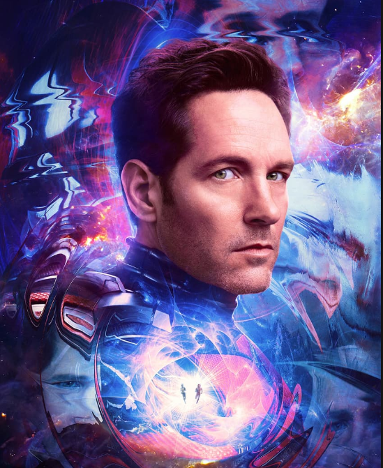
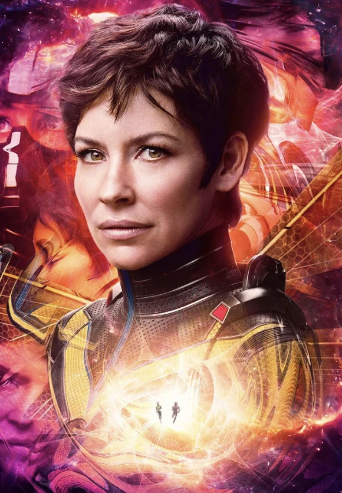
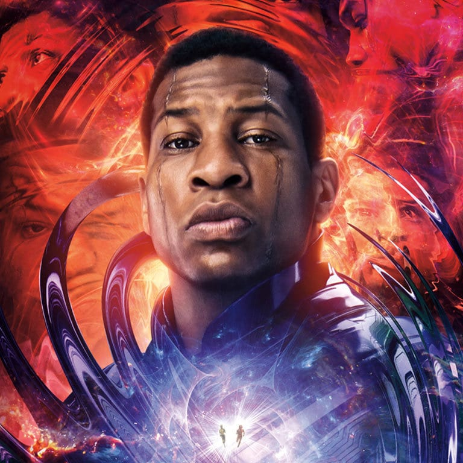

Personagens

Homem-Formiga/Scott Lang
Scott Lang foi o segundo Homem-Formiga e se tornou herói para ajudar Dr. Henry "Hank" Pym, As partículas Pym permitem a ele alterar seu tamanho e ter força sobre-humana, e seu capacete permite controlar e se comunicar com insetos

Vespa/Hope Van Dyne
Depois de reacender seu relacionamento com seu pai, Van Dyne e Pym trabalham juntos para trazer de volta a mãe de Van Dyne, Mais tarde, ela fica presa no Reino Quântico ao lado de sua família e trabalha com eles para derrotar Kang, o Conquistador.

Cassie Lang
Cassie trabalha com Hank Pym e Hope van Dyne para construir um satélite quântico, bem como sua própria versão roxa de um traje "Homem-Formiga". MODOK traz Cassie e sua família para o Reino Quântico, onde ela ajuda a lutar contra a tirania do exilado Kang.

Hank Pym
O Doutor Henry Jonathan "Hank" Pym é um entomologista e físico que desenvolveu o Traje do Homem-Formiga depois de descobrir as Partículas Pym, ele trabalhou para a S.H.I.E.L.D. como consultor e se tornou o Homem-Formiga original.

Janet Van Dyne
Janet van Dyne é a esposa de Hank Pym e mãe de Hope van Dyne. Ela operou sob o codinome Wasp na S.H.I.E.L.D.

Kang, o Conquistador
Nathaniel Richards é uma variante de Kang que procurou conquistar o maior número possível de mundos. Ele se juntou ao Conselho de Kangs. Considerando que as ações do conselho levariam ao fim do Multiverso